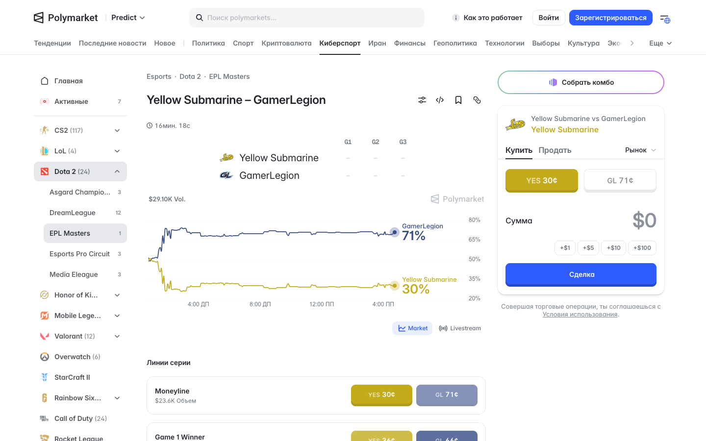
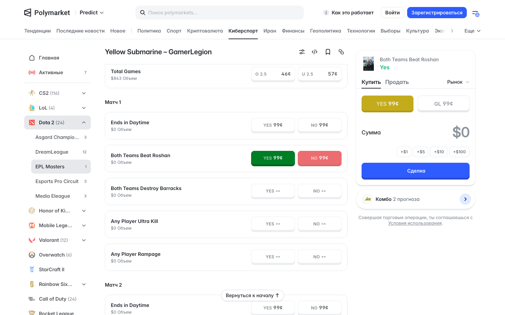
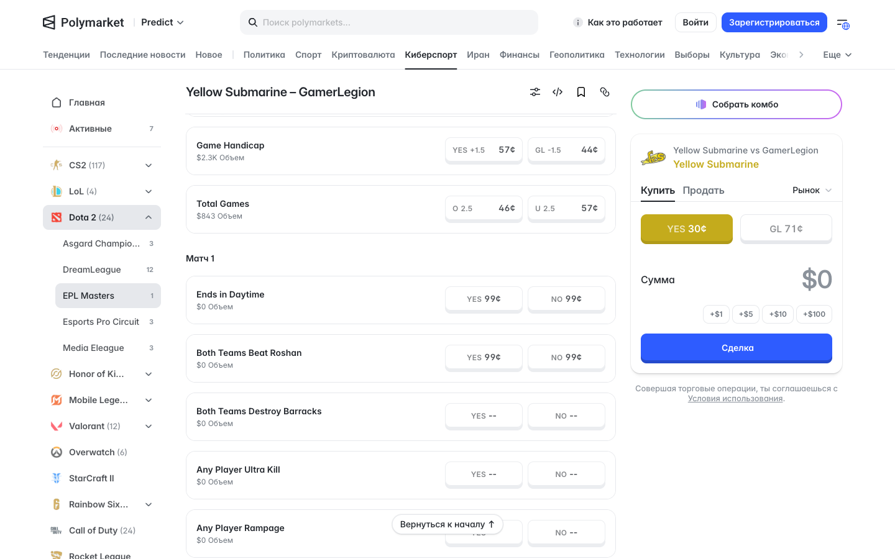

Начальник 04.11: «наиболее близок к Polymarket-элементу ставок и к BetBoom-элементу ставок». Матч Dota 2, снято 05.11

Страница матча: справа карточка ставки — исход, «Купить / Продать», две кнопки исходов с ценой (= шанс), сумма, «Сделка»

Выбрал «Yes» в строке «Both Teams Beat Roshan»: строка красится зелёный / красный, карточка справа подхватывает этот вопрос; под ней — «Комбо 2 прогноза»

Линии ниже графика: каждая строка — вопрос и две кнопки «Yes / No» с ценой; по картам — «Матч 1», «Матч 2»